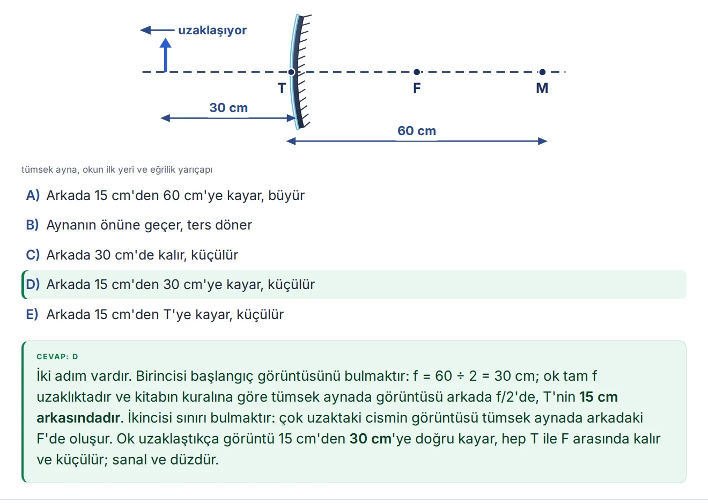
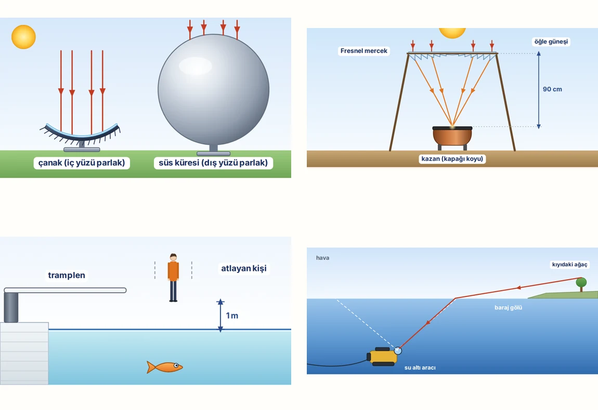

Ders planı
Haftanın hedefi, ders akışı ve uygulama adımları.
YENİ ETKİLEŞİMLİ FORMAT · BFY HOCA KİTİ
Tahtada anlat, cevapları adım adım aç, öğrenci nüshasını yazdır. Hoca Kiti’nin yeni etkileşimli formatını iki ücretsiz örnek haftayla keşfet.
BİR HAFTA, TAM BİR DERS DÜZENİ
Dağınık klasörlerde zaman kaybetme.
Dersi planlamadan değerlendirmeye
altı parçalık bir akış.
Haftanın hedefi, ders akışı ve uygulama adımları.
Öğrencinin düşünüp yazacağı, derste kullanacağı sayfalar.
Konu sonunda öğrenmeyi görünür kılan sorular.
Soruların yanıtları ve değerlendirme desteği.
Kavram yanılgıları, ipuçları ve öğretmen rehberi.
Dersin akışına eşlik eden, ekranda kullanılacak slaytlar.
Yıllık plan · 12 yazılı · Cevap anahtarları · Zümre tutanak şablonları
YENİ KİT DENEYİMİ / ÜCRETSİZ 2 HAFTA
Kitin gerçek dosyasını aşağıda kullanabilirsin.
Öğrenci, hoca ve tahta modlarını kendin dene.
Dersi slaytlar ve sorularla tam ekranda işle.
Cevapları hazır olduğunda düğmeyle aç.
Kalem, renk ve silgiyle anlatımı destekle.
Hoca veya öğrenci görünümünde yazdır.
9. SINIF · HAFTA 7
Gerçek kit dosyasını bu alanda aç.
Modları değiştir, cevapları göster, dersi keşfet.
Telefonda daha geniş çalışmak veya yazdırmak için “Tam sayfada aç” seçeneğini kullanabilirsin.
YENİ ETKİLEŞİMLİ ÖRNEKLERDE
Hazırlık yaparken, tahtada anlatırken ve öğrenciyi değerlendirirken aynı kitin farklı parçalarını kullan.
Öğrenme çıktısı kodları, ön değerlendirme ve 80 dakikalık ders akışı. Hangi aşamada hangi soruyu veya etkinliği kullanacağını gör.
Çalışma kâğıdı, mini test, bağlam temelli sorular ve etkinlik föyüyle düşünür, karşılaştırır ve veriden sonuç çıkarır.
Hoca notları, sık görülen kavram yanılgıları, farklılaştırma önerileri ve değerlendirme araçları dersin kararlarını destekler.
Tahta modunda sun; hoca nüshasında notları ve çözümleri aç; öğrenci nüshasında cevapları gizle. Görünümü ihtiyacına göre değiştir.
Çözümleri adım adım aç. Ekran kalemi, renkler, silgi ve geri alma ile sorunun üzerinde çalış. Tahta modunda klavye oklarıyla ilerle.
İki örneği ZIP olarak indir, HTML dosyalarını tarayıcıda aç. Kurulum gerekmez. PDF düğmesiyle seçtiğin görünümü yazdır veya PDF olarak kaydet.
ÜCRETSİZ · 9. SINIF / YENİ ETKİLEŞİMLİ ÖRNEKLER
7. hafta: Skaler ve Vektörel Nicelikler. 23. hafta: Kaldırma Kuvveti / Deney Haftası. İki ayrı HTML dosyası; hoca nüshası, öğrenci nüshası ve tahta moduyla birlikte.
ZIP’i aç, istediğin haftayı tarayıcıda çalıştır. PDF düğmesiyle yazdırabilir veya PDF olarak kaydedebilirsin.
9. sınıf 7. ve 23. haftanın etkileşimli kitleri.
İki haftayı birlikte indirZIP dosyasını çıkar. HTML dosyalarını tarayıcıda aç; kurulum gerekmez.
YENİ · 11. SINIF · MAARİF 2026
2026 Maarif programına göre baştan yazıldı: Kuvvet ve Hareket, Elektrik ve Manyetizma, Optik. 36 haftanın her biri tek bir etkileşimli dosyada; tahtada anlat, soruya dokun, cevap adım adım açılsın.


SINIFINA GÖRE SEÇ
Dijital teslimat · Tek öğretmen lisansı
Ödeme ve teslimat: Shopier
TAM PAKET
Tek öğretmen lisansı
TAM PAKET
Tek öğretmen lisansı
YENİ · MAARİF 2026
Tek öğretmen lisansı
İki kiti birlikte alana %20, üç kiti birlikte alana %30 indirim.
4 yazılı dönemi × kolay, orta, zor: 12 yazılı, cevap anahtarları ve puanlama rubriği.
Daha sonra 9. sınıf tam pakete geçersen ödediğin ₺299 düşülür.AYRI BİR KAYNAK / 9–12. SINIF
Fizik Deney Atölyesi
Konuna uygun deneyi bul, öğretmen yönergesini oku, öğrenci sayfasını yazdır. İhtiyacın olan yere doğrudan gidebildiğin, sınıfta kullanmak için hazırlanmış bir PDF.
Hoca Kiti’nden ayrı satılır.
AKLINDA KALMASIN
Başka bir sorun varsa
Timur Hoca’ya yazabilirsin.
Örnekler 9. sınıfın 7. ve 23. haftalarıdır. Sitede doğrudan deneyebilir veya iki HTML dosyasını ZIP olarak indirebilirsin. ZIP’i çıkardıktan sonra dosyayı tarayıcıda aç. Tahta, hoca ve öğrenci modları dosyanın içindedir; PDF düğmesi tarayıcının yazdırma ekranını açar.
Hoca Kiti dijital bir üründür. Dosyaları indirir; PDF’leri yazdırabilir, düzenlenebilir dosyaları sınıfına göre uyarlayabilirsin. Buradaki kitap görselleri dijital kitin tanıtımını temsil eder.
Evet. 9 ve 10. sınıf kitlerindeki DOCX dosyalarında soru ekleyip çıkarabilir, okul ve öğrenci bilgilerini değiştirebilirsin. 11. sınıf kiti etkileşimli HTML + PDF olarak gelir; yazılılarda okul adını, başlığı ve soru metinlerini tarayıcıda “Düzenle” düğmesiyle değiştirip kendi kopyanı indirebilirsin. PDF dosyaları doğrudan yazdırılabilir.
PDF’ler telefon, tablet ve bilgisayarda açılır. DOCX dosyalarını Google Docs, Apple Pages veya LibreOffice ile de düzenleyebilirsin.
Bireysel lisans tek öğretmen içindir. Zümre (3 öğretmen), okul (5 öğretmen) ve kurumsal lisans için fiyat almak üzere e-posta gönder.
9. sınıfta v1.x, 10. sınıfta v2.x, 11. sınıfta v3.x kapsamındaki güncellemeler ücretsizdir ve satın alım e-postana iletilir. Sonraki büyük sürümler için ayrı indirim teklif edilebilir. Bir hata fark edersen Timur Hoca’ya yaz.
Satın alım sonrasında e-postana indirme bağlantısı gönderilir. Bağlantı 24 saat geçerlidir ve 3 indirme hakkı sunar. Ulaşmazsa spam klasörünü kontrol edebilir veya iletişime geçebilirsin.
BİR SONRAKİ DERS İÇİN